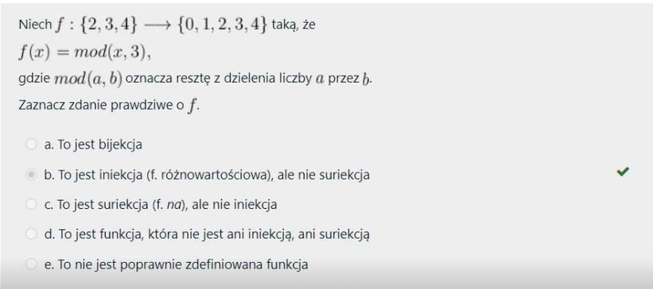
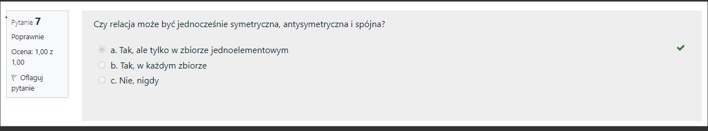
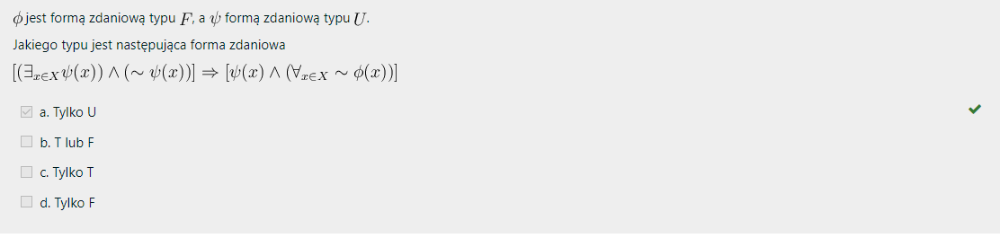

#
Niech i ozaczają indeksowane rodziny podzbiorów uniwersum indeksowane
elementami ze zbioru indeksów Twierdzenie można zapisać jako:
Moze cos jeszcze
#
Dla zbioru czesciowo uporzadkowanego podaj liczbe majorant rodziny
zbiorow (0 jezeli nie istnieje)
#

Niech taka, ze gdzie oznacza reszte z dzielenia liczby a przez b.
Zaznacz zdanie prawdziwe o
#
Niech A i B będą dowolnymi zbiorami. Zaznacz prawdziwe zdania.
#
Zaznacz pary zbiorów, pomiędzy którymi istnieje bijekcja.
#
Na dziedzinie X = [-3,3] definiujemy funkcje o wartościach f(x) = x^2
oraz g(x) = 1. Która z poniższych relacji również jest funkcją na tej
samej dziedzinie?
#
Rozważmy funkcję f: {\mathbb R}\ni x \rightarrow x^2-1 \in {\mathbb R}
. Obraz zbioru A przez funkcję f oznaczamy jako f(A). Wskaż wszystkie
prawdziwe stwierdzenia:
#
Zaznacz operacje, które są przemienne.
#
Niech p oznacza zdanie logiczne, a 1 zdanie prawdziwe. Wskaż wszystkie
tautologie
#
Niech P(X) oznacza zbiór potęgowy zbioru X, a o oznacza różnicę
symetryczną zbiorów. P(P(o)) o (P(o) jest równe
#
Czy istnieją relacje, które są jednocześnie symetryczne i
antysymetryczne?
#
Zaznacz zdania równoważne zdaniu a <=> B.
#
Niech f : {1, 2, ...., 7} -> {0, 1, 2} taką że, f(x) = mod(x^2, 3)
oznacza resztę z dzielenia liczby a przez b
#
Uszereguj podane zbiory tak, aby dla dowolnego wyboru zbiorów A, B, C
każdy zbiór był podzbiorem zbioru nad nim.
#
Niech R będzie relacją określoną na niepustym zbiorze X ( R c X x X).
Relacja oznacza przekątną zbioru X. Dopasuj zachodzące równoważności
#
Niech f : Z x Z -> Z będzie dane wzorem f(n,k) = n2k, Które z
poniższych zdań są prawdziwe?
#

Czy relacja może być jednocześnie symetrzyczna, antysymetryczna i
spójna?
#
Rozważmy formę zdaniową określoną dla x i y będacych liczbami
całkowitymi. Z poniższej listy wybierz wszystkie zdania prawdziwe.
#
Zaznacz relacje R, które są relacjami częsciowego porządku.
#
Ile relacji zwrotnych można utworzyć na zbiorze trójelementowym?
#
Rozważmy dowolną funkcję postaci f ze zbioru X w X, która jest
injekcją, ale nie surjekcją. Czy to prawda jest, że:
#
Niech p i q oznaczają zdania logiczne. Wskaż wszystkie tautologie.
#
Funkcja f: R -> R jest suriekcją jeśli:
#
Na zbiorze liczb naturalnych dodatnich określamy relację częsciowego
porządku m <= n = m dzieli n. Supremum zbioru {1, 2, 3} względem
zadanej relacji to:
#
Niech będa formami zdaniowymi. Zaznacz wszystkie odpowiedzi prawdziwe
do wyrażenia
#
Definiujemy funkcję f : Wskaż wszystkie prawdziwe stwierdzenia.
#
Z poniższych zdań wskaż zdania prawdziwe.
#
Zaznacz własności relacji R określonej na zbiorze Z Symbol | oznacza
podzielność
#
Na zbiorze definiujemy relacje oraz . Czy prawdą jest, że:
#
Niech i będą formami zdaniowymi z argumentem przyjmującym wartości
należące do niepustego uniwersum. Wskaż wszystkie tautologie.
#
Poniższa formuła jest tautologią
#
Poniższy dowód tautologii (*) jest NIEPOPRAWNY. Z listy wybierz
wszystkie niepoprawne wnioski. Przeprowadzamy dowód niewprost.
#
Dana jest funkcja zdefiniowana następująco: jeśli oraz jeśli . Które
zdania są prawdziwe?
#
Czy istnieją relacje, które są jednocześnie symetryczne i
antysymetryczne?
#
Niech φ(x, y) będzie formą zdaniową dwóch zmiennych x i y, których
zakresem zmienności jest zbiór liczb naturalnych ℕ, taką, że φ(x, y) ≡
y ≤ x Zaznacz prawdziwą odpowiedź dla wyrażenia ∃y∊ℕ: φ(x, y)
#
Które z propozycji są poprawnymi kontrprzykładami na to, że wynika z ?
#
Która z funkcji jest bijekcją?
#
Na zbiorze X = {1,2,3,4} definiujemy relację częściowego porządku. Dla
których z poniższych zbiorów , pozostaje relacją częściowego porządku?
#
Prawdą jest, że
#
W dowodzie tautologii (*)
#
Niech T będzie niepustym zbiorem indeksów. Dla zbioru A zachodzi
#
Relacja R c {1, 2}2 taka, że jest (zaznacz wszystkie prawidłowe
odpowiedzi)
#
R jest relacją częsciowego porządku na XxX. Wtedy zawsze zachodzi:
#
Dla dowolnych zbiorów prawdziwa jest równość:
#
Niech bedzie forma zdaniowa zmiennej ktorej zakresem zmiennosci jest
niepusty zbior. Zaznacz odpowiedz prawdziwa dla wyrazenia
#
Niech A i B będa liczbami rzeczywistymi traktowanymi jako klasy dolne
przekrojów Dedekinda zbioru Q. Wówczas
#
Niech funkcja f : X -> Y będzie injekcją, a gdy g: Y -> Z będzie
surjekcją. Wskaż wszystkie prawdziwe stwierdzenia:
#
Ile istnieje surjekcji ze zbioru Z na zbiór R?
#
Niech P(X) oznacza zbiór potęgowy zbioru X, a O oznacza zbiór pusty.
Wskaż prawdziwe stwierdzenia:
#
Niech będa formami zdaniowymi. Zaznacz wszystkie odpowiedzi prawdziwe
do wyrażenia
#
niech r e R będzie liczbą rzeczywistą wymierną utożsamioną z q e Q i
traktoraną jako klasa dolna przekroju Dedekinda zbioru Q. Cz q-1 e r?
#
Niech |X| = 2 i |Y| = 3 Podaj liczbę funkcji f: X -> Y. (0 jeżeli nie
istnieje)
#
Dopasuj wyrażenia z prawej kolumny do wyrażen z kolumny lewej, w taki
sposób aby utworzone zostały zawsze prawdziwe inkluzje lub równości.
0,75
#
Wskaż które z poniższych zbiorów stanowią zbiór potęgowy jakiegoś
zbioru:
#
Na zbiorze X x X mamy daną pewną relację równoważnosci R. Jeżeli
zdeifniujemy teraz relację S na zbiorze (X/R) x (P(X) taką, że
#
Czy zlozenie dwoch relacji rownowaznosci jest relacja rownowaznosci?
Wybierz jedna odpowiedz
#
Niech i beda dowolnymi formami zdaniowymi zmiennej w zbiorze. Zaznacz
zdania zawsze prawdziwe.
#
Niech taką, że gdzie oznacza resztę z dzielenia liczby przez . Zaznacz
zdanie prawdziwe o f. Zaznacz zdanie prawdziwe o
#
Dane są dwie funkcje f : R -> R i q : R -> R. Dla jakich funkcji
złożenie g o f jest surjekcją?
#
Niech będzie formą zdaniową z argumentem przyjmującym wartości
należące do niepustego uniwersum, a zdaniem logicznym.
#
Operator alternatywy wykluczającej (XOR) jest zdefiniowany jako .
Wskaż wszystkie tautologie
#
Niech będa formami zdaniowymi z argumentem x przyjmującym wartości
należace do niepustego uniwersum. Wskaż wszystkie tautologie.
#
Zaznacz zdania równoważne zdaniu.
#
Niech taką, że gdzie to reszta z dzielenia przez . Podaj maksymalną
wartość (liczbę elementów zbioru ), dla której może być iniekcją. (0
jeżeli nie istnieje, -1 jeżeli nieskończenie wiele).
#
Zaznacz wszystkie poprawne stwierdzenia
0/1 pkt. - 2 dobrze, "a" też powinno być
#
Wybierz własności, które spełnione śa przez wszystkie surjekcje f : X
-> Y, gdzie X i Y są niepustymi i rozłącznymi zbiorami
#
Operator jednoczesnego zaprzeczenia (NOR) jest zdefiniowany jako.
Wskaz wszystkie tautologie.
#
Wskaż podzbioru zbioru A' - B' - C', dla dowolnego wyboru zbiorów A,
B, C.
0/1 pkt. - 2 dobrze
#
Które relacje R C R x R są funkcjami?
#
Wskaż relacje równoważności
#

jest formą zdaniową typu a formą zdaniową typu U. Jakiego typu jest
następująca forma zdaniowa
#
Funkcja f zdefiniowana jako f(x) = sin(x) jest bijekcją, jeśli
#
Majorantą przedziału (0,1) w R ze zwykłym porządkiem <= jest:
Do zrobienia
#
Rozważmy odwzorowane f : Q -> Q zadane poprzez x. Z poniższych zdań
wskaż prawdziwe stwierdzenia.
Do zrobienia
#
Rozważmy dowolną bijekcję ze zbioru na . Czy prawdą jest, że:
Do zrobienia
#
Rozważmy dwie liczby całkowite, zdefiniowane standardowo jako klasy
abstrakcji na N x N. Zaznacz prawdziwe stwierzednia o nich i ich
różnicy.
#
Oznaczmy przez p zdanie ,,Ala ma kota", przez q zdanie ,,Ten hamburger
jest nieświeży", a przez r zdanie ,,Deszcz nie pada lub ten hamburger
jest świeży". Zdanie ,,Jeśli ten hamburger jest nieświeży i pada
deszcz, to Ala nie ma kota" jest równoważne zdaniu:
0/1 pkt. - do zrobienia
#
Spośród poniższych zdań wybierz zdania prawdziwe.
Brakuje (jescze a.)
#
Dana jest rodzina przedziałów otwartych indeksowana liczbami
naturalnymi (0,1,2,...) taka, że. Wskaż zdania prawdziwe:
#
Rozważmy funkcję. Obraz zbioru przez funkcję oznaczamy jako, a
przeciwobraz zbioru oznaczamy jako. Wskaż wszystkie prawdziwe
stwierdzenia: a
0 pkt. - Do zrobienia
#
Niech R będzie relacją równoważności na zbiorze X, |X| > 2. Wtedy
zachodzi:
#
Ile różnych relacji częściowego porządku można wprowadzić na zbiorze
dwuelementowym X = \{a,b\}?
Do zrobienia
#
Co możemy powiedzieć o liczbie relacji porządku określonych na zbiorze
X o co najmniej rzech elemenach. Zaznacz zdanie prawdziwe
Do zrobienia
#
Jeżeli oraz są zstępującymi rodzinami zbiorów to zachodzi równość.
Uwaga: rozdzinę zbiorów nazywamy zstępującą, gdy dla wszystkich.
Wybierz jedną odpowiedź:
#
Niech będzie formą zdaniową z argumentem przyjmującym wartości
należące do niepustego uniwersum, a zdaniem logicznym. Wskaż wszystkie
tautologie.
#
Jeśli zbiory A, B, C są takie, że A = B ∪ C, to zawsze zachodzi
#
Na zbiorze definiujemy relację równoważności. Na jakie sposoby można
zapisać dowolną jej klasę abstrakcji?
#
Pewna relacja R na zbiorze X x X jest zwrotna i posiada ponadto
właściwość. Czy da się pokazać, że jest ona również symetryczna?
#
Z poniższych zdań wybierz zdania prawdziwe.
#
Czy relacja spójna jest relacją zwrotną? Wybierz jedną odpowiedź:
#
Niech będą formami zdaniowymi określonymi dla x e X a p, q to zdania.
Wskaż zdania (które nie są formami zdaniowymi).
B poprawne
#
Zaznacz wyrażenia, które po podstawieniu w miejsce? zamienią formułę w
tautologię.
#

Niech będzie bijekcją ze zbioru w zbior oraz. Co można powiedziec o
zbiorze dla różnych liczb naturalnych n i m?
#
Surjekcją jest funkcja taka, że oraz:
#
Niech oznaczają indeksowane rodziny podzbiorów uniwersum indeksowane
elementami ze zbioru indeksów. Twierdzenie można zapisać jako:
#

Niech liczba kardynalna. Zaznacz zdania prawdziwe.
#
Dla zbioru częściowo uporządkowanego gdzie oznacza podzielność,
znaleźć supremum zbioru (-1 jeżeli nie istnieje)
Do zrobienia (2 też jest źle) 3 również
#
Rozwazmy wyrazenie postaci w ktorym zdanie wystepuje razy. Z
ponizszych zdan wskaz prawdziwe stwierdzenia.
#
Niech będzie zbiorem liter występujących w wyrazie "informatyka", a
zbiorem liter występujących w wyrazie "komputery". Proszę wypisać
alfabetycznie (bez spacji, przecinków itp.) elementy zbioru
Powinno być afin
#
Dane są funkcje takie że oraz zbiory. Prawdą jest, że:
#

Dopasuj wyrażenia z lewej kolumny z wyrażeniami z kolumny prawej w
taki sposób, aby utworzona została tautologia rachunku
kwantyfikatorów.
#
Rozważmy dwa elementy zbioru oraz. Które stwierdzenia o ich różnicy są
prawdziwe?
Nie wiem jak z c
#
Relacją częściowego porządku jest:
Nie wiem jak z a
#
Dopasuj wyrażenia z lewej kolumny z wyrażeniami z kolumny prawej w
taki sposób, aby utworzona została tautologia rachunku
kwantyfikatorów.
#
Niech i będą indeksowanymi rodzinami zbiorami. Poniżej znajduje się
poprawny lub błedny dowód formuły. Dowód: Jeżeli dowód jest poprawny
wpisz 0. Jeżeli dowód jest błędny wpisz numer pierwszego blędnego
przejścia, który znajduje się w nawiasie nad równoważnoścą lub
implikacją. Jeżeli każde przejście jest prawdziwe, a dwód mimo to jest
błędny, czyli udowodniono coś innego, wpisz -1. Zakładamy, że xeX i
neN, zakres zmienności pominięto dla skrócenia zapisu i nie należy
tego traktować jako błędu. Odpowiedź:
Był błąd systemu, 3 jest dobrze
#

Dla zbioru częściowo uporządkowanego podaj liczbę majorant rodziny
zbiorów (0 jeżeli nie istnieje)
#

#
Niec i Podaj liczbę suriekcji (f. "na"). (0 jeżeli nie istnieje)
Do zrobienia
#
Z poniższych równości wybierz wszystkie będące tożsamościami rachunku
zbiorów
Możliwe że brakuje
#
Niech będzie formą zdaniową z argumentem przyjmującym wartości
należące do niepustego uniwersum, a zdaniem logicznym. Wskaż wszystkie
tautologie.
#
Na zbiorach i definiujemy relację oraz. Wskaż wszystkie prawdziwe
stwierdzenia:
#
Niech zbiór a zbiór. Ile jest wszystkich funkcji które nie są
suriekcjami
#
Rozważmy funkcję Obraz zbioru przez funkcję oznaczamy jako a
przeciwobraz zbioru oznaczamy jako Wskaż wszystkie prawdziwe
stwierdzenia.
#
Tautologią jest:
Do zrobienia
#
Zaznacz pary zbiorów, pomiędzy którymi istnieje bijekcja.
do zrobienia
#
Rozważmy formę zdaniową określoną dla i będacych liczbami całkowitymi
Z poniższej listy wybierz wszystkie zdania prawdziwe
#
Rozwazmy rownosc Czy prawda jest ze
#
Niech będa dowolnymi formami zdaniowymi zmiennej w zbiorze Zaznacz
zdania zawsze prawdziwe.
#
Dla definiujemy zbiory . Z ilu elementów składa się zbiór ?
#
Niech taką że gdzie oznacza resztę z dzielenia liczby przez Zaznacz
zdanie prawdziwe o
#
Zaznacz pary zbiorów, pomiędzy którymi istnieje bijekcja.
#
Niech i będa liczbami rzeczywistymi traktowanymi jako klasy dolne
przekrojów Dedekinda zbioru Q Wówczas
#
Dane są dwie funkcje i Dla jakich funkcji złożenie g o f jest
surjekcją?
#
Dane są rodziny zbiorów Co możemy wstawić w puste pole
#
Sparuj prawo logiki z jego nazwą.
#
Niech taką, że gdzie oznacza resztę z dzielenia liczby przez Zaznacz
zdanie prawdziwe o f
#

Które z poniżej zdefiniowanych relacji na zbiorze par liczb
całkowitych staniwą relację częsciowego porządku, ale nie liniowego
porządku?